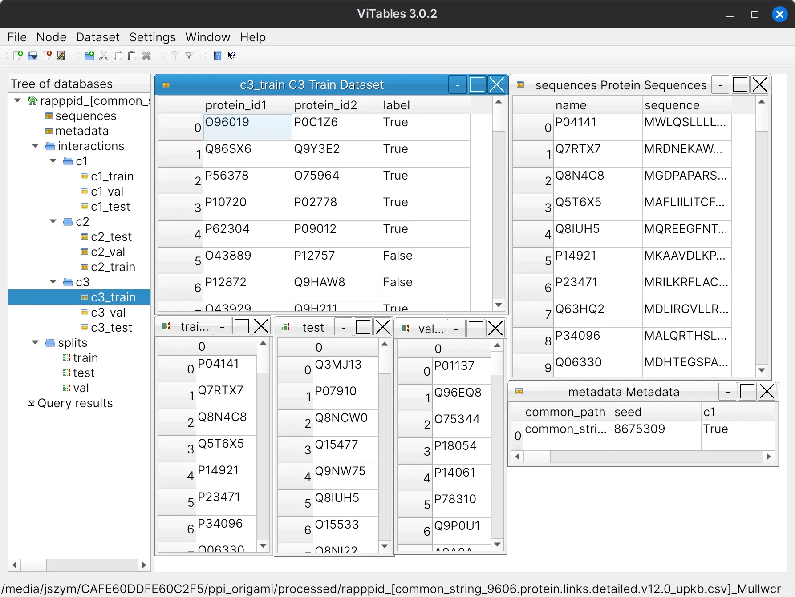

Usage Guide#
Get data into the “common” format#
PPI Origami defines a “common” format from which it can create “strict” datasets (see Theory for more information about strict datasets). This file contains information on binary interactions. No “negative” examples of protein pairs which do not interact are to be included in this file.
The common format is simply a CSV file with the following four columns:
Column Name |
Example |
Description |
|---|---|---|
|
|
A unique identifier for the interaction. |
|
|
The UniprotKB accession for the first protein in the binary interaction. |
|
|
The UniprotKB accession for the second protein in the binary interaction. |
|
|
Information about confidence scores for the interaction (e.g.: STRING score). You can filter edges on the basis of these scores. It follows the format |
There are some built-in tools in PPI Origami for converting STRING and D-SCRIPT datasets to the “common” format. Here’s an example of how to do that for the STRING dataset:
# Download Human edges for STRING v12 into the "raw" folder
ppi_origami download string_links_detailed raw --version 12.0 --taxon 9606
# Download STRING alias data into the "raw" folder
ppi_origami download string_aliases raw --version 12.0
# Download Secondary UniprotKB accession data into the "raw" folder
# This will allow us to convert secondary accession codes to primary accessions
ppi_origami download uniprot_sec_ac raw
# Add information about UniprotKB accession codes to the STRING file
ppi_origami process string_upkb raw processed 12.0 9606
# Convert the STRING database to the "common" format
ppi_origami process common_format processed string_links_detailed 9606 upkb 12.0
This will result in a file processed/common_string_9606.protein.links.detailed.v12.0_upkb.csv.gz. This is a gzip
compressed file in the “common” format representing H. sapiens data from the STRING v12 dataset. The UniprotKB
accessions are normalized such that secondary accession codes are converted to primary accession codes.
$ zcat processed/common_string_9606.protein.links.detailed.v12.0_upkb.csv.gz | head
interaction_id,protein1,protein2,score
Q86X27><P84085.1,P84085,Q86X27,string_combined_score:173|string_experimental:134|string_database:|string_textmining:81
Q9C0D6><P84085.1,P84085,Q9C0D6,string_combined_score:154|string_experimental:128|string_database:|string_textmining:70
P36543><P84085.1,P84085,P36543,string_combined_score:151|string_experimental:49|string_database:|string_textmining:69
Q99418><P84085.1,P84085,Q99418,string_combined_score:471|string_experimental:53|string_database:|string_textmining:457
Q9NYI0><P84085.1,P84085,Q9NYI0,string_combined_score:201|string_experimental:46|string_database:|string_textmining:197
Q8N5M4><P84085.1,P84085,Q8N5M4,string_combined_score:180|string_experimental:125|string_database:|string_textmining:50
P14672><P84085.1,P84085,P14672,string_combined_score:181|string_experimental:82|string_database:|string_textmining:133
Q9UJY5><P84085.1,P84085,Q9UJY5,string_combined_score:594|string_experimental:296|string_database:|string_textmining:445
Q96I51><P84085.1,P84085,Q96I51,string_combined_score:154|string_experimental:58|string_database:|string_textmining:126
Create a strict RAPPPID dataset from the “common” format#
Now that we have our data in the “common” format, the rest gets easier. We can create a strict dataset in the RAPPPID HDF5 format.
# Download the Uniref90 dataset to the "raw" folder
# Uniref data is used to test the similarity of proteins
ppi_origami download uniref raw 90
# Process the Uniref90 dataset and store in the "processed" folder
# The Uniref90 files comes as an unwieldy, large XML file
# We parse that into a LevelDB database for efficiency
ppi_origami process uniref raw processed 90
# Download sequence data from UniprotKB and build a database
# in the "processed" folder for H. sapiens
ppi_origami download uniprot_seqs_db processed --taxon 9606
# Finally, we convert the STRING dataset, with UniprotKB accessions
# in the "common" format, into the RAPPPID HDF5 format.
ppi_origami process common_to_rapppid processed processed/common_string_9606.protein.links.detailed.v12.0_upkb.csv.gz [1,2,3] \
--train_proportion 0.8 --val_proportion 0.1 --test_proportion 0.1 --neg_proportion 1 --uniref_threshold 90 \
--score_key string_combined_score --score_threshold 950 --seed 8675309 --taxon 9606
This will create a PPI dataset with as many generated negative example as positive examples. Here, datasets that
correspond to Park & Marcotte C1, C2, and C3 classes are created. The file name in this case is
rapppid_[common_string_9606.protein.links.detailed.v12.0_upkb.csv]_MullwcrDNdNzBBOEABq_5VIy7UQ=.h5 . The random
string of characters at the end is a hash of the parameters used to create the dataset. It is deterministically
generated so datasets with the same parameters will have the same hash.
Below is a screenshot of the HDF5 file as viewed from the ViTables programme.
{kind=link}
Create an INTREPPPID dataset from a RAPPPID dataset#
INTREPPPID datasets incorporate orthology data that RAPPPID datasets do not, and are required for training the INTREPPPID PPI inference algorithm.
# We'll need sequence data from as many species as possible when generating INTREPPPID datasets
# So let's download UniprotKB sequences, but this time without specifying the organism
# This takes an hour and a half on my computer.
ppi_origami download uniprot_seqs_db processed
# Download orthology data from the OMA database
ppi_origami download oma processed
# Create a LevelDB database mapping UniProt accession codes to OMA Group IDs
ppi_origami process oma_upkb_groups raw processed
# Download the Uniref90 dataset to the "raw" folder
# Uniref data is used to test the similarity of proteins
ppi_origami process rapppid_to_intrepppid processed processed/rapppid_[common_string_9606.protein.links.detailed.v12.0_upkb.csv]_MullwcrDNdNzBBOEABq_5VIy7UQ=.h5 \
processed/intrepppid_[common_string_9606.protein.links.detailed.v12.0_upkb.csv]_MullwcrDNdNzBBOEABq_5VIy7UQ=.h5 \
[1,2,3] --uniref_threshold 90